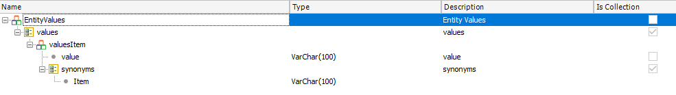

In order to create and initialize Chatbot Entity values (and their synonyms) in the AI provider, using the Chatbot generator, you just need to execute the following steps.
Its signature is as follows: parm(in:&ChatbotInstance, in:&EntityValues, in:&Entity, out:&Messages); where

SampleTake a look at the example shown in HowTo: Build a chatbot using GeneXus, and open the "InitializeEntityValuesPrc" procedure. In this example, you are sending values to the AI provider to load the "Social_Event_Type" entity and some synonyms for each of the values (the synonyms are not mandatory). &SDTEntityValues.values.Clear() &SDTEntitiesValuesValue.value = !"Art" &SDTEntitiesValuesValue.synonyms.Add(!"Artistic") &SDTEntityValues.values.Add(&SDTEntitiesValuesValue) &SDTEntitiesValuesValue = new() &SDTEntitiesValuesValue.value = !"Culture" &SDTEntitiesValuesValue.synonyms.Add(!"Cultural") &SDTEntityValues.values.Add(&SDTEntitiesValuesValue) &SDTEntitiesValuesValue = new() &SDTEntitiesValuesValue.value = !"Nature" &SDTEntitiesValuesValue.synonyms.Add(!"Fresh air") &SDTEntityValues.values.Add(&SDTEntitiesValuesValue) &InstanceName = !"CitizenServiceSD" Chatbot.Watson.SendEntitiyValues(&InstanceName,&SDTEntityValues,!"Social_Event_Type",&messages) do "ProcessErrors" After executing this procedure, consider that the AI takes a time to train the information. Note: The entities are created in the Provider if they do not exist. See also |